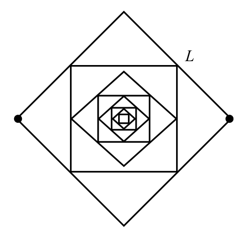
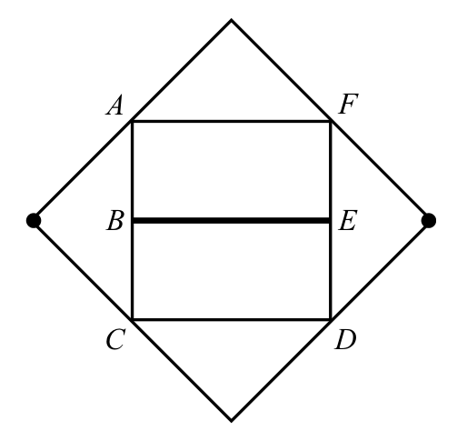
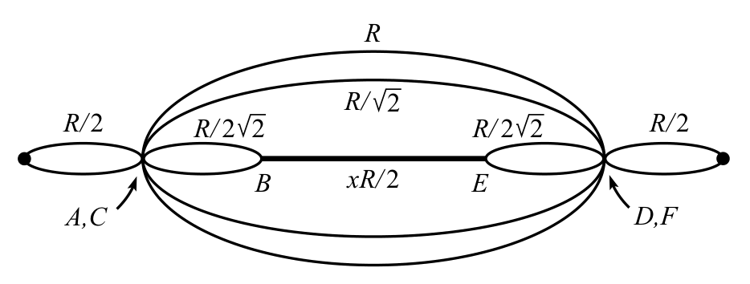
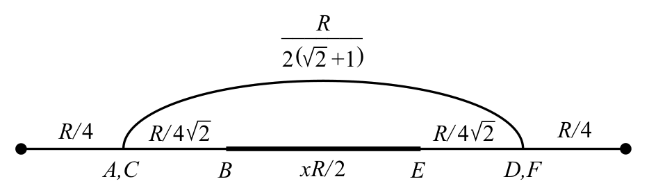
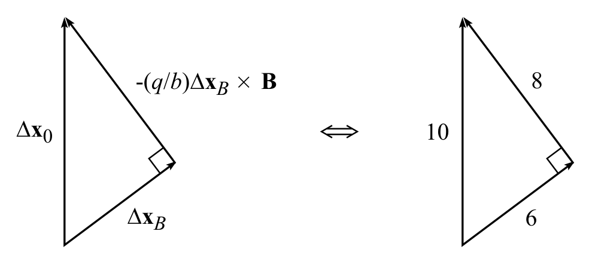
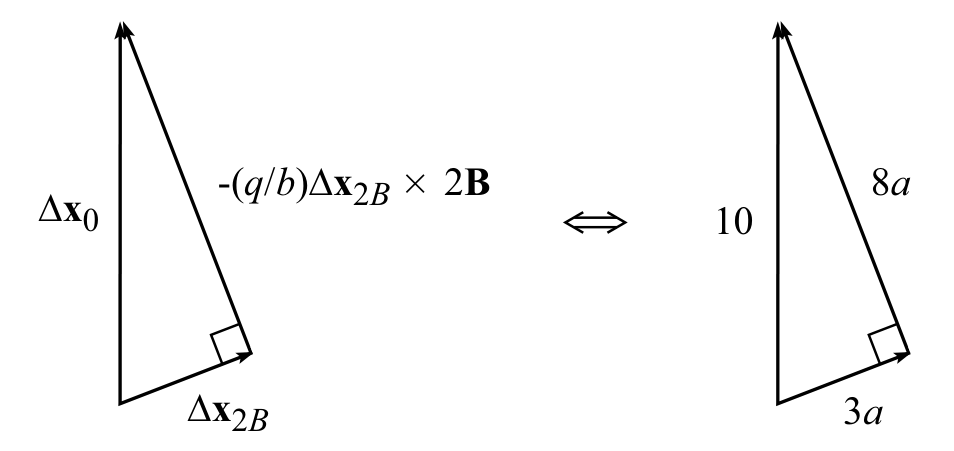
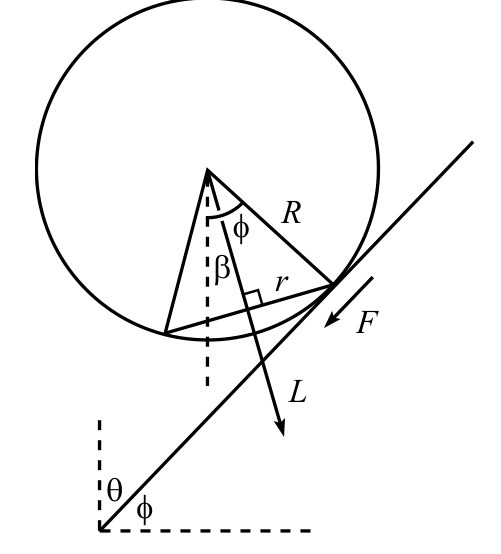

제9회 Boston Area Undergraduate Physics Competition, 2003년 4월 26일 — 풀이(Solutions)
시각 $t$에 밧줄의 자유단은 속력 $gt$로 움직이고 있고, 거리 $gt^2/2$만큼 떨어졌다. 이 거리는 받침점 아래에서 “두 겹으로 접힌다”. 따라서 시각 $t$에 길이 $gt^2/4$는 정지한 채 매달려 있고, 길이 $L-gt^2/4$는 속력 $gt$로 움직인다. 따라서 밧줄 전체의 운동량은 $p=-\rho(L-gt^2/4)(gt)$이며, 여기서 $\rho\equiv M/L$은 질량 밀도(mass density)이고 음의 부호는 아래 방향 운동을 뜻한다.
밧줄 전체에 작용하는 힘은 아래 방향의 $Mg=\rho Lg$와 위 방향의 $N$(받침점이 가하는 힘)이다. 따라서 밧줄 전체에 $F=dp/dt$를 적용하면
\[\begin{aligned}N-\rho Lg&=\frac{d}{dt}\left(-\rho Lgt+\frac{\rho g^2t^3}{4}\right)\\\Longrightarrow\quad N&=\frac{3\rho g^2t^2}{4}.\end{aligned}\tag{1}\](이것은 $3\rho v^2/4$와 같다는 것에 유의하라.) 이 결과는 자유단이 거리 $2L$을 떨어지는 데 걸리는 시간인 $t=\sqrt{4L/g}$까지 성립한다. 이 시간 뒤에는 받침점이 가하는 힘이 단순히 밧줄 전체의 무게 $Mg$이다.
참고(Remark): 시각 $t$에 정지한 채 매달린 밧줄 부분의 무게는 $\rho(gt^2/4)g=\rho g^2t^2/4$이다. 식 (1)로부터, 받침점은 이 정지한 부분 무게의 세 배인 힘을 가해야 함을 알 수 있다. 추가의 힘이 필요한 이유는, 받침점이 정지한 부분을 떠받치는 것 이상의 일을 해야 하기 때문이다. 받침점은 자유 낙하 운동을 하다가 갑자기 정지하게 되는 밧줄 속 원자들의 운동량 변화를 일으켜야 한다.
기둥이 매우 가늘기 때문에, 질량의 운동은 언제나 원운동으로 근사할 수 있다. 줄이 완전히 풀렸을 때 줄이 이루는 구하려는 각을 $\theta$라 하자. 그러면 질량의 전체 높이 변화는 $L\cos\theta$이다. 따라서 에너지 보존으로부터
\[mgL\cos\theta=\frac{mv^2}{2}.\tag{2}\]질량의 높이가 (기둥이 아주 가늘어서) 매우 천천히 변하므로, 줄의 장력의 수직 성분은 실질적으로 $mg$이다. 따라서 장력의 수평 성분은 $mg\tan\theta$이다. 질량은 반지름 $L\sin\theta$인 수평 원을 따라 움직이므로, 수평 방향의 $F=ma$ 방정식은
\[mg\tan\theta=\frac{mv^2}{L\sin\theta}.\tag{3}\]식 (3)을 식 (2)로 나누면
\[\tan\theta=\sqrt2.\tag{4}\]수치로는 $\theta\approx54.7^\circ$이다.
마주 보는 꼭짓점 사이의 구하려는 저항을 $xR$이라 하자. 여기서 $x$는 앞으로 결정할 수치 인자이다. 가장 큰 두 정사각형을 제외한 모든 정사각형을 생각하자. 이 저항기들의 부분 집합을 $S_3$이라 하자. $S_3$은 원래 회로를 2배 축소한 것과 똑같다. 따라서 $S_3$의 오른쪽과 왼쪽 꼭짓점 사이의 저항은 $xR/2$이다(모든 단면적이 같고, 저항은 길이에 비례하기 때문이다).
좌우 대칭성으로부터, 아래 회로의 수직 이등분선 위의 모든 점은 같은 퍼텐셜에 있다. 따라서 그림처럼 $S_3$의 위와 아래 꼭짓점을 그것들이 닿아 있는 수평선으로부터 떼어 놓을 수 있다.

그러면 그림처럼 $S_3$을 저항이 $xR/2$인 유효 저항기로 생각할 수 있다.

이제 위아래 대칭성에 주목하여 이 회로를 단순화할 수 있다. 위아래 대칭성에 따르면 $A$를 $C$와, 또 $D$를 $F$와 같은 점으로 볼 수 있다. ($B$를 $A,C$와, 또는 $E$를 $D,F$와 같은 점으로 볼 수는 없다는 것에 유의하라.) 그러면 다음을 얻는다.

조금 더 줄이면 다음을 얻는다.

마지막으로 한 번 더 줄이고 그 결과를 $xR$과 같게 놓으면
\[xR=\frac R2+\left(\frac{1}{\frac{R}{2(\sqrt2+1)}}+\frac{1}{\frac{R}{2\sqrt2}+\frac{xR}{2}}\right)^{-1}\tag{5}\]이제 $x$에 대해 풀어야 한다. 차근차근 정리하면
\[\begin{aligned}&2x-1=\frac{1}{\sqrt2+1+\frac{\sqrt2}{\sqrt2x+1}}\\\Longrightarrow\quad&(2x-1)\Big((2+\sqrt2)x+2\sqrt2+1\Big)=\sqrt2x+1\\\Longrightarrow\quad&(2+\sqrt2)x^2+\sqrt2x-(\sqrt2+1)=0\\\Longrightarrow\quad&x^2+(\sqrt2-1)x-\frac{1}{\sqrt2}=0\\\Longrightarrow\quad&x=\frac12(\sqrt3-\sqrt2+1)\approx0.659.\end{aligned}\tag{6}\]$\mathbf F=d\mathbf p/dt$를 적분하면
\[\Delta\mathbf p=\int\mathbf F\,dt.\tag{7}\]자기장을 켜기 전에 입자에 작용하는 힘은 $\mathbf F=-b\mathbf v$ 꼴이다. 따라서
\[\Delta\mathbf p=\int(-b\mathbf v)\,dt.\tag{8}\]그런데 $\int\mathbf v\,dt=\Delta\mathbf x$이며, 여기서 $\Delta\mathbf x$는 전체 변위(displacement)이다(이 경우 영역 안쪽으로 똑바로 $10\,\text{cm}$이다). 따라서
\[\Delta\mathbf p_0=-b\Delta\mathbf x_0,\tag{9}\]여기서 아래첨자는 $\mathbf B$가 0인 경우를 나타낸다.
이제 자기장을 켜자. $\mathbf F=-b\mathbf v+q\mathbf v\times\mathbf B$이므로
\[\begin{aligned}\Delta\mathbf p&=\int(-b\mathbf v+q\mathbf v\times\mathbf B)\,dt\\&=-b\Delta\mathbf x+q\Delta\mathbf x\times\mathbf B.\end{aligned}\tag{10}\]그런데 여기서의 $\Delta\mathbf p$는 식 (9)의 $\Delta\mathbf p_0$와 같다. 입자의 처음 속도가 같고 나중 속도도 같기(즉 0) 때문이다. 따라서 ($-b$로 나눈 뒤) 다음을 얻는다.
\[\Delta\mathbf x_0=\Delta\mathbf x_B-(q/b)\Delta\mathbf x_B\times\mathbf B.\tag{11}\]우변의 두 항은 서로 직교하는 벡터이다. 이 두 직교 벡터의 합이 좌변의 벡터와 같고 $|\Delta\mathbf x_B|/|\Delta\mathbf x_0|=6/10$이므로, 다음과 같은 6-8-10 직각삼각형을 얻는다.

이제 자기장을 두 배로 하면
\[\Delta\mathbf x_0=\Delta\mathbf x_{2B}-(q/b)\Delta\mathbf x_{2B}\times2\mathbf B.\tag{12}\]우변의 두 벡터의 크기의 비는 식 (11)의 두 벡터의 비의 두 배이다. 즉 $8/6$ 대신 $8/3$이다. 따라서 이제 다음 직각삼각형을 얻는다.

피타고라스 정리(Pythagorean theorem)에 의해 $a$의 값은 $10/\sqrt{73}$이다. 따라서 입자의 알짜 변위는 $|\Delta\mathbf x_{2B}|=3a=30/\sqrt{73}\approx3.51\,\text{cm}$이다.
잠시 평면의 기울기를 무시하고, 튕긴 뒤의 $\omega_f$와 $v_f$가 튕기기 전의 $\omega_i$와 $v_i$와 어떻게 관계되는지 구하자(여기서 $v$는 평면에 평행한 속도 성분을 나타낸다). 속도와 힘의 양의 방향은 평면을 따라 오른쪽으로 하고, 각속도(angular velocity)의 양의 방향은 반시계 방향으로 하자. (한 번 튕기는 짧은 시간 동안) 마찰력과 그에 따른 돌림힘(torque)을 적분하면
\[\begin{aligned}F&=\frac{dp}{dt}&&\Longrightarrow&\int F\,dt&=\Delta p,\\\tau&=\frac{dL}{dt}&&\Longrightarrow&\int\tau\,dt&=\Delta L.\end{aligned}\tag{13}\]그런데 $\tau=RF$이다. 그리고 $R$은 일정하므로
\[\Delta L=\int RF\,dt=R\int F\,dt=R\Delta p.\tag{14}\]따라서
\[I(\omega_f-\omega_i)=Rm(v_f-v_i).\tag{15}\]그런데 에너지 보존으로부터
\[\begin{aligned}\frac12mv_f^2+\frac12I\omega_f^2&=\frac12mv_i^2+\frac12I\omega_i^2\\\Longrightarrow\quad I(\omega_f^2-\omega_i^2)&=m(v_i^2-v_f^2).\end{aligned}\tag{16}\]이 식을 식 (15)로 나누면1
\[R(\omega_f+\omega_i)=-(v_f+v_i).\tag{17}\]이제 이 식을 식 (15)와 결합할 수 있다. 식 (15)는 ($I=(2/5)mR^2$을 써서) 다음과 같이 다시 쓸 수 있다.
\[\frac25R(\omega_f-\omega_i)=v_f-v_i.\tag{18}\]$v_i$와 $\omega_i$가 주어지면, 앞의 두 식은 두 미지수 $v_f$와 $\omega_f$에 대한 두 개의 일차 방정식이다. $v_f$와 $\omega_f$에 대해 풀고 그 결과를 행렬 표기로 쓰면
\[\begin{pmatrix}v_f\\R\omega_f\end{pmatrix}=\frac17\begin{pmatrix}3&-4\\-10&-3\end{pmatrix}\begin{pmatrix}v_i\\R\omega_i\end{pmatrix}\equiv\mathcal A\begin{pmatrix}v_i\\R\omega_i\end{pmatrix}.\tag{19}\]다음에 유의하라.
\[\mathcal A^2=\frac1{49}\begin{pmatrix}49&0\\0&49\end{pmatrix}=\mathcal I.\tag{20}\]이제 기울어진 평면의 효과를 생각하자. 평면에 수직인 공의 속력은 튕길 때마다 변하지 않으므로, 공은 연속한 두 번의 튕김 사이에 공중에서 언제나 같은 시간을 보낸다. 중력의 평면에 수직인 성분이 $g\cos\theta$이므로 이 시간은 $T=2V/g\cos\theta$이다. 이 시간 동안 평면을 따른 속력은 $(g\sin\theta)T=2V\tan\theta\equiv V_0$만큼 증가한다.
1 자명한 해 $\omega_f=\omega_i$, $v_f=v_i$는 나누어 없앴다. 이 해는 마찰이 없는 평면에서 미끄러지는 운동에 해당한다. 곧 구할 자명하지 않은 해는 미끄러지지 않는 해이다. 기본적으로, 에너지가 보존되려면 마찰이 한 일이 없어야 한다. 그런데 일은 힘 곱하기 거리이므로, 이는 평면에 마찰이 없거나, 공의 접촉점과 평면 사이에 상대 운동이 없다는 뜻이다. 평면에 마찰이 있다고 주어졌으므로, 우리가 다루는 것은 후자(미끄러지지 않는 경우)여야 한다.
주어진 시각의 $(v,R\omega)$ 벡터를 $\mathbf Q$로 나타내자(여기서 $v$는 평면에 평행한 속도 성분이다). 공은 처음에 $\mathbf Q=\mathbf 0$으로 던져진다. 따라서 첫 번째 튕김 직전에 $\mathbf Q_1^{\bf before}=(V_0,0)\equiv\mathbf V_0$이다. (공이 공중에 있는 동안 $\omega$가 변하지 않는다는 사실을 썼다.) 첫 번째 튕김 직후에는 $\mathbf Q_1^{\bf after}=\mathcal A\mathbf V_0$이다. 그러면 $\mathbf Q_2^{\bf before}=\mathcal A\mathbf V_0+\mathbf V_0$이고, 따라서 $\mathbf Q_2^{\bf after}=\mathcal A(\mathcal A\mathbf V_0+\mathbf V_0)$이다. 이런 식으로 계속하면
\[\begin{aligned}\mathbf Q_n^{\bf before}&=(\mathcal A^{n-1}+\cdots+\mathcal A+\mathcal I)\mathbf V_0,\quad\text{그리고}\\\mathbf Q_n^{\bf after}&=(\mathcal A^n+\cdots+\mathcal A^2+\mathcal A)\mathbf V_0.\end{aligned}\tag{21}\]그런데 $\mathcal A^2=\mathcal I$이므로, $\mathcal A$의 짝수 거듭제곱은 모두 $\mathcal I$와 같다. 따라서 $n$번째 튕김 뒤의 $\mathbf Q$ 값은 다음과 같다.
\[\begin{aligned}n\text{ 짝수}\quad&\Longrightarrow\quad\mathbf Q_n^{\bf after}=\frac n2(\mathcal A+\mathcal I)\mathbf V_0.\\n\text{ 홀수}\quad&\Longrightarrow\quad\mathbf Q_n^{\bf after}=\frac12\Big((n+1)\mathcal A+(n-1)\mathcal I\Big)\mathbf V_0.\end{aligned}\tag{22}\]식 (19)에서 정의한 $\mathcal A$의 값을 쓰면
\[\begin{aligned}n\text{ 짝수}\quad&\Longrightarrow\quad\begin{pmatrix}v_n\\R\omega_n\end{pmatrix}=\frac n7\begin{pmatrix}5&-2\\-5&2\end{pmatrix}\begin{pmatrix}V_0\\0\end{pmatrix}.\\n\text{ 홀수}\quad&\Longrightarrow\quad\begin{pmatrix}v_n\\R\omega_n\end{pmatrix}=\frac17\begin{pmatrix}5n-2&-2n-2\\-5n-5&2n-5\end{pmatrix}\begin{pmatrix}V_0\\0\end{pmatrix}.\end{aligned}\tag{23}\]따라서 $n$번째 튕김 뒤 평면을 따른 속력은 ($V_0\equiv2V\tan\theta$를 써서) 다음과 같다.
\[\begin{aligned}v_n&=\frac{10nV\tan\theta}{7}\qquad(n\text{ 짝수}),\\v_n&=\frac{(10n-4)V\tan\theta}{7}\qquad(n\text{ 홀수}).\end{aligned}\tag{24}\]참고(Remark): 짝수 번 튕긴 뒤에는 식 (23)이 $v=-R\omega$를 준다는 것에 유의하라. 이것은 “굴림(rolling)” 조건이다. 즉 각속력이 병진 속력과 정확히 맞아떨어지므로, $v$와 $\omega$는 튕김에 의해 영향을 받지 않는다. (벡터 $(1,-1)$은 $\mathcal A$의 고유벡터(eigenvector)이다.) 짝수 $n$번째 튕김이 일어나는 순간의 $v$와 $\omega$는 평면을 따라 그냥 굴러 내려가는 공의 값과 같다. 홀수 $n$번째 튕김 직후의 순간에는 $v$가 굴러가는 공의 값보다 작지만 $\omega$는 더 크다. (그리고 홀수 $n$번째 튕김 직전에는 $v$가 더 크지만 $\omega$는 더 작다.)
공은 원뿔 둘레를 임의로 빠르게 돌 수 있는 것으로 드러난다. 앞으로 보겠지만, 접촉원(contact circle)의 평면(아래 그림에서 현으로 나타냄)은 접촉점에서 아래쪽으로 기울어져 있어야 하며, 그래야 공이 그림의 위치에 있을 때 각운동량(angular momentum)이 오른쪽 방향의 수평 성분을 가진다. 이하에서는 각 $\phi\equiv90^\circ-\theta$를 쓰는 것이 편리하다.

먼저 평면을 따른 $F=ma$를 보자. 원뿔 둘레를 도는 공의 운동의 각진동수(angular frequency)를 $\Omega$라 하자. 그러면 공의 수평 가속도는 왼쪽으로 $m\ell\Omega^2$이다. 따라서 평면을 따른 $F=ma$로부터 ($F_f$는 마찰력)
\[mg\sin\phi+F_f=m\ell\Omega^2\cos\phi.\tag{25}\]이제 $\boldsymbol\tau=d\mathbf L/dt$를 보자. 공이 얼마나 빨리 회전하는지 파악하기 위해, 공의 중심이 정지해 있는 회전 좌표계(rotating frame)에서 배치가 어떻게 보이는지 생각하자(그러면 원뿔이 빙빙 도는 동안 공은 제자리에서 회전하기만 한다). 미끄러짐이 없으므로, 공 위의 접촉점과 원뿔 위의 접촉점은 같은 속력을 가져야 한다. 즉
\[\omega r=\Omega\ell\qquad\Longrightarrow\qquad\omega=\frac{\Omega\ell}{r},\tag{26}\]여기서 $\omega$는 회전 좌표계에서 공의 각속력이고, $r$은 공 위 접촉원의 반지름이다.2 실험실 좌표계에서 공의 각운동량은 (적어도 여기서의 목적을 위해서는3) $L=I\omega$이며, 위 그림에 보인 방향을 향한다.
$\mathbf L$ 벡터는 공이 원뿔 둘레를 도는 것과 같은 진동수 $\Omega$로 $\mathbf L$ 공간에서 원뿔을 그리며 세차 운동(precession)을 한다. $\mathbf L$의 수평 성분만 변하며, 이 성분은 진동수 $\Omega$로 반지름 $L_{\rm hor}=L\sin\beta$인 원을 그린다. 따라서
\[\left|\frac{d\mathbf L}{dt}\right|=L_{\rm hor}\Omega=(I\omega\sin\beta)\Omega=\frac{I\Omega^2\ell\sin\beta}{r},\tag{27}\]이고, $d\mathbf L/dt$의 방향은 종이 안쪽이다.
(공의 중심에 대한) 공에 작용하는 돌림힘은 마찰력 $F_f$ 때문이다. 따라서 $|\boldsymbol\tau|=F_fR$이고, 그 방향은 종이 안쪽이다. 그러므로 $\boldsymbol\tau=d\mathbf L/dt$로부터 ($I=\eta mR^2$, 이 문제에서는 $\eta=2/5$)
\[\begin{aligned}F_fR&=\frac{I\Omega^2\ell\sin\beta}{r}\\\Longrightarrow\quad F_f&=\frac{\eta mR\Omega^2\ell\sin\beta}{r}.\end{aligned}\tag{28}\]2 공의 중심이 반지름 $\ell$인 원을 따라 움직인다면, 여기서의 $\ell$은 실제로는 원뿔 위 접촉원의 반지름인 $\ell+R\sin\phi$로 바꾸어야 한다. 그러나 $R\ll\ell$이라고 가정하므로 $R\sin\phi$ 부분은 무시할 수 있다.
3 이 $L=I\omega$ 결과는 엄밀히 옳지는 않다. 실험실 좌표계에서 공의 각속도는 회전 좌표계에서의 각속도(방금 구한 크기 $\omega$로 아래쪽으로 기울어져 있다)에 실험실 좌표계에 대한 회전 좌표계의 각속도(크기 $\Omega$로 똑바로 위를 향한다)를 더한 것이기 때문이다. 이 두 번째 각속도 부분은 단지 각운동량에 추가의 수직 성분을 더할 뿐이다. 그러나 공이 원뿔 둘레를 도는 동안 $\mathbf L$의 수직 성분은 시간에 따라 변하지 않는다. 이하에서는 $d\mathbf L/dt$만 다루므로 이 성분은 무관하다.
이 $F_f$를 식 (25)에 쓰면
\[mg\sin\phi+\frac{\eta mR\Omega^2\ell\sin\beta}{r}=m\ell\Omega^2\cos\phi.\tag{29}\]$\Omega$에 대해 풀면
\[\Omega^2=\frac{g\sin\phi}{\ell\left(\cos\phi-\frac{\eta R\sin\beta}{r}\right)}.\tag{30}\]다음 조건이면 공이 원뿔 둘레를 무한히 빠르게 돌 수 있음을 알 수 있다.
\[\cos\phi=\frac{\eta\sin\beta}{r/R}.\tag{31}\]이제 위 그림에서 $\gamma\equiv\phi-\beta$로 정의하면 $r/R=\sin\gamma$, $\beta=\phi-\gamma$이다. 따라서 식 (31)은 다음이 된다.
\[\cos\phi=\frac{\eta\sin(\phi-\gamma)}{\sin\gamma}.\tag{32}\]분자에 사인의 덧셈 공식을 쓰면, 이는 다음과 같이 다시 쓸 수 있다.
\[\begin{aligned}\tan\gamma=\frac{\eta}{1+\eta}\tan\phi&=\frac27\tan\phi\\&=\frac27\cot\theta,\end{aligned}\tag{33}\]여기서 $\eta=2/5$를 썼다. 마침내 다음을 얻는다.
\[\begin{aligned}\frac rR=\sin\gamma&=\frac{1}{\sqrt{1+\cot^2\gamma}}\\&=\frac{1}{\sqrt{1+\frac{49}{4}\tan^2\theta}}.\end{aligned}\tag{34}\]참고(Remarks):
(1) $\theta\approx0$인 극한(즉 매우 가는 원뿔)에서는 $r/R\approx1$을 얻으며, 이는 타당하다. 접촉원은 실질적으로 수평인 대원(great circle)이다.
$\theta\approx90^\circ$인 극한(즉 거의 평평한 평면)에서는 $r/R\approx0$을 얻는다. 접촉점들의 원은 매우 작지만, 공은 (마찰이 충분하다고 가정하면) 여전히 원뿔 둘레를 임의로 빠르게 굴러갈 수 있다. 이는 그다지 직관적이지 않다.
(2) 어떤 $\phi$ 값이 접촉원의 가장 큰 기울기 각(즉 가장 큰 $\beta$)을 허용하는가? 식 (31)로부터, $\beta$를 최대로 하는 것은 $(r/R)\cos\phi$, 또는 동등하게 $(r/R)^2\cos^2\phi$를 최대로 하는 것과 같다. 식 (34)의 $r/R$ 값을 쓰면, 다음을 최대로 해야 한다.
\[(r/R)^2\cos^2\phi=\frac{\cos^2\phi}{1+\frac{49}{4}\cot^2\phi}.\tag{35}\]$\phi$에 대해 미분하고 약간의 대수 계산을 거치면, 최대는 다음일 때 얻어진다.
\[\tan\phi=\sqrt{\frac72}\qquad\Longrightarrow\qquad\phi=61.9^\circ.\tag{36}\]그러면 식 (31)로부터 다음을 보일 수 있다.
\[\sin\beta_{\rm max}=\frac59\qquad\Longrightarrow\qquad\beta_{\rm max}=33.7^\circ.\tag{37}\](3) 접촉원의 세 가지 특별한 경우, 즉 수평 원, 대원, 수직 원을 생각해 보자.
(a) 수평 원(horizontal circle): 이 경우 $\beta=0$이므로 식 (30)으로부터
\[\Omega^2=\frac{g\tan\phi}{\ell}.\tag{38}\]이 경우 $\mathbf L$은 수직 방향을 향하므로 $d\mathbf L/dt$는 0이고, 따라서 돌림힘이 0이며, 따라서 마찰력이 0이다. 그러므로 공은 마찰 없이 미끄러지는 입자와 같은 속력으로 원뿔 둘레를 돈다. (그러한 입자가 실제로 $\Omega^2=g\tan\phi/\ell$을 가진다는 것을 보일 수 있다.) 수평 접촉점 원($\beta=0$)은 구가 마찰 없는 입자보다 빠르게 움직이는 경우와 느리게 움직이는 경우의 경계이다.
(b) 대원(great circle): 이 경우 $r=R$, $\beta=-(90^\circ-\phi)$이다. 따라서 $\sin\beta=-\cos\phi$이고, 식 (30)으로부터
\[\Omega^2=\frac{g\tan\phi}{\ell(1+\eta)}.\tag{39}\]이는 당연히 그래야 하듯이 $\eta=0$일 때 마찰 없는 입자의 경우로 돌아간다.
(c) 수직 원(vertical circle): 이 경우 $r=R\cos\phi$, $\beta=-90^\circ$이므로 식 (30)으로부터
\[\Omega^2=\frac{g\tan\phi}{\ell\left(1+\frac{\eta}{\cos^2\phi}\right)}.\tag{40}\]이것도 당연히 그래야 하듯이 $\eta=0$일 때 마찰 없는 입자의 경우로 돌아간다. 그러나 $\phi\to90^\circ$(가는 원뿔)이면 $\Omega$는 0으로 가는 반면, 위의 다른 두 경우에는 $\Omega$가 $\infty$로 간다.